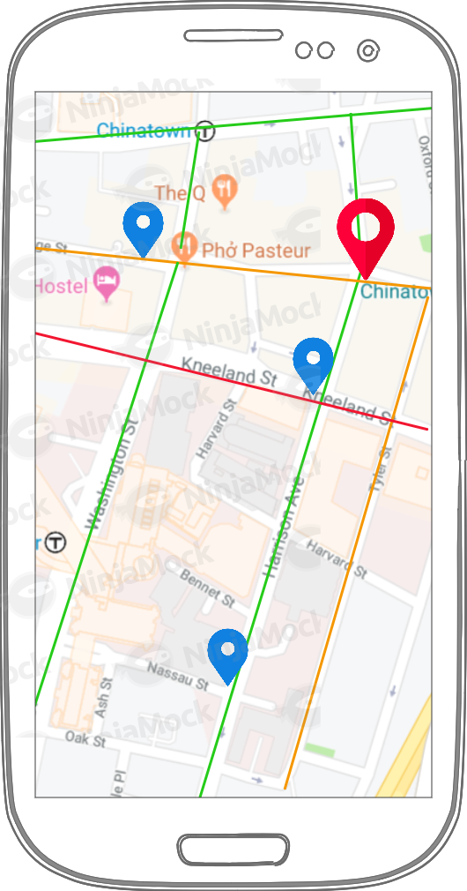
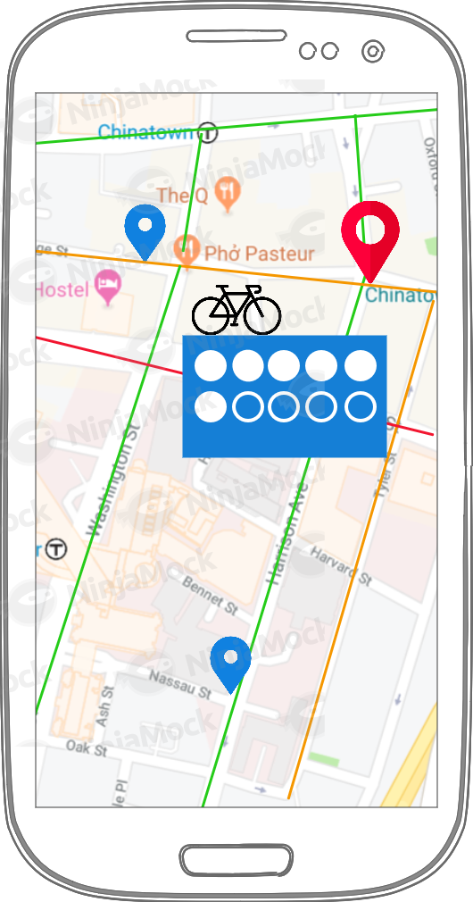

Description of the application
We aim to use Open Data of the City of Boston about the bike network, stations and trips in order to create an application for the user: a person who wants to ride a bike in Boston.
The complete application should have a map with the bicycle lanes available, the estimated traffic in those, the locations of BlueBike stations, and how many bikes/parking spots are available in each station.
Additional functionalities can potentially be build on top of that, such as advising a preferable route for the user to take, considering the usual traffic conditions and the bicycle lanes available, or ranking the usage and popularity of both routes and bike stations.
Mock-ups of the final interface
This section displays some mock-ups regarding the approximate look that the final application might have. Moreover, some of the previously described functionalities are shown.
This is just a very general representation, and the final product might significantly differ from the one displayed here.
|
|

|

|
|
Login page
|
Map and traffic page
|
Bike availability page
|